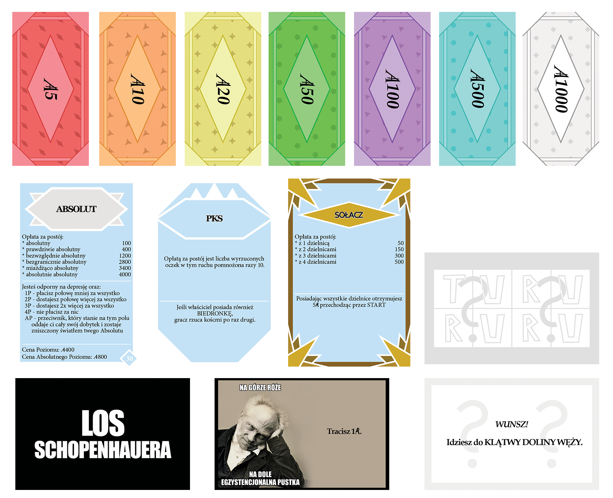

I am a graduate of Geoinformation at the University of Adam Mickiewicz in Poznań and Technical Secondary School No. 6 in the field of photography. High school awakened my passion for creating things with visual value. I love to create illustrations in vector graphics, take photos, edit videos or realise other, more complex projects. My studies made me interested in writing code to some extent. As part of my engineering thesis, I wrote an interactive geostatistical application using the R language. In addition to the above-mentioned activities, I also like to relax with an interesting story, be it in a computer game, book, movie or tv series. Feel free to check my works below.

I got interested in vector graphics during technical school, after I quite accidentally installed Adobe Illustrator on my computer. Since then, I have been creating a lot of illustrations and trying different styles. Unfortunately, I have more ideas for single graphics or larger projects than I have time to spend on them. However, I'm positive and hope that one day I will be able to make all of them come true.
British Cannon.
One of my very first illustrations.

Carthaginian Airship.
Steampunk Antiquity in which Carthage had airships?
Inspired by the Avatar: the Last Airbender animated series.

The Owl Queen.
Created as a majestic gift.

Kalimatis.
It shows the original character of a friend, created as a birthday present for her.
Chibi Girl.
Chibi style representation of a friend.

Eco InPost.
Design of a veneer for the InPost parcel locker dealing with ecological topics.
Realized as a proposal for the ArtInPost 2021 competition.
Olympian Bitcoin.
Logo designed for an online store selling clothes and accessories in a cryptocurrency vibe.

The Princess of Madness.
Part of a series of illustrations created as a gift for friends.

The Dealer.
Part of a series of illustrations created as a gift for friends.
The Agate.
Part of a series of illustrations created as a gift for friends.

The Viking.
Part of a series of illustrations created as a gift for friends.

The Many-Faced.
Part of a series of illustrations created as a gift for friends.
Smog Wawelski.
Based on the visual interpretation of the Wawel Dragon from the series "Egzorcysta" by Bartosz Walaszek.
Lysandre.
Chibi style Pokemon character.
Arcandor.
A symbol of Arcandor, a city from an invented universe.

Aegyptus.
A symbol of Aegyptus, a country from an invented universe.
Tjara Empire.
A symbol of Tjara, an empire from an invented universe.

El Ariete.
The diagram shows the Düwag GT8ZR tram in the form of a war machine, i.e. a wartram.
Apart from single illustrations, I like to develop larger projects. It often happens that my own image of something that already exists comes into my mind, e.g. board games. So far, I've completed three such projects, the first of them was Absolutpoly, i.e. a completely new version of Monopoly, the design and content of which refer to common experiences and topics in a group of friends called Absolutes.


The second major project was a deck of playing cards set in the Geoverse, a universe created together with friends from studies, in which each of the lecturers becomes one of the heroes, villains or simply an interesting person. The cards show characters from the 4 factions existing in the Geoverse.


The biggest project is our own, geoverse and beyond version of the Munchkin card game, which I am creating with my friends from studies (it's mostly done). It consists of over 160 cards, most of which have been illustrated by me. Here are just a handful of them.


I have been interested in photography since I started studying at the Technical School in the field of phototechnics. I like to photograph nature, landscape and I am always looking for frames that will present the subject in an interesting way.


Editing videos dates back to my childhood, when my brother and I were creating short "music videos" from scenes from the Pokemon anime. Since then, I have tried programs like Camtasia Studio and CyberLink PowerDirector and are currently working in Adobe Premiere Pro. I like to create montages from scenes from movies/series that, together with the background music, tell a coherent story, e.g. of a given character. Below are three such films: about Toffee from the animated series Star vs. the Forces of Evil; photocast about my dog Rufi, which I made after his departure, and a Cylon history video from the reimagined Battlestar Galactica universe. The rest of the videos are available on my YouTube channel.
During my studies, I had contact with languages such as HTML, CSS, JavaScript, R, Python and SQL. Below is the mentioned geostatistical application called Krigzy.